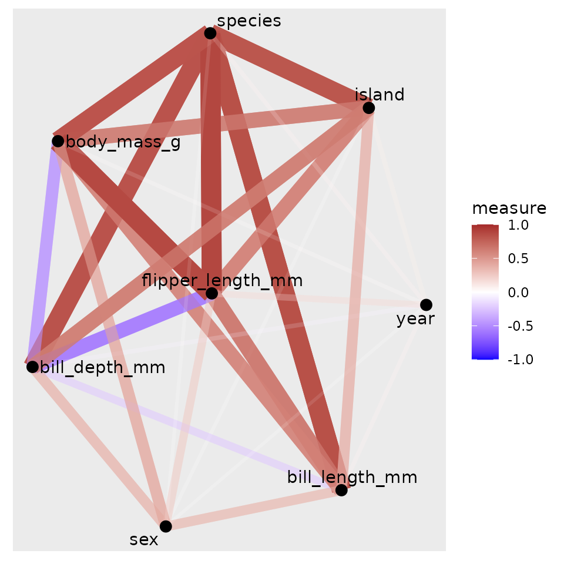
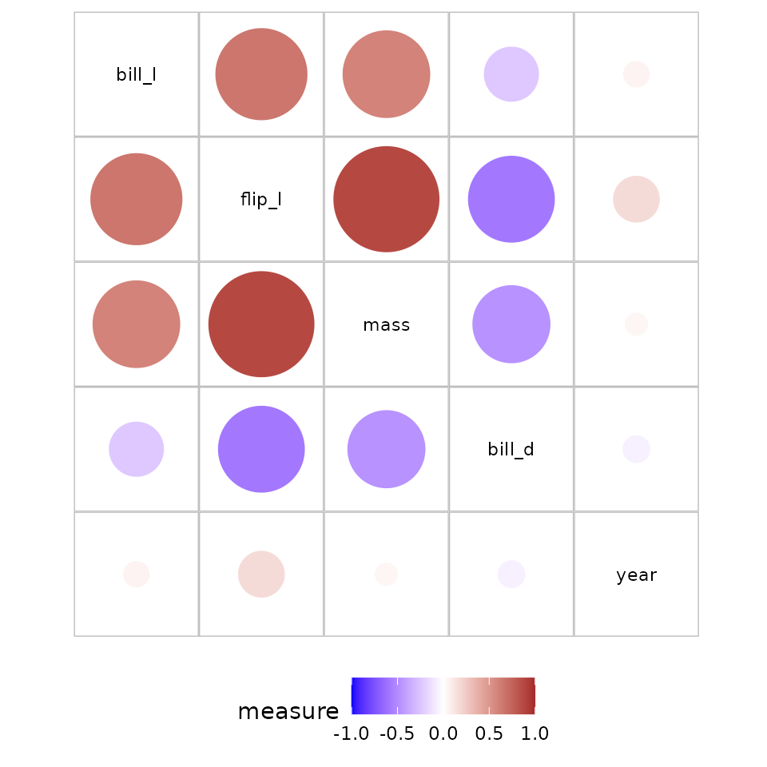

integrating_corVis.RmdThis vignette provides information on how data structures or display methods in corVis can be used with other R packages. We separate out the calculation and visualisation steps in corVis, which makes it an open ended package for both data structures and displays.
corVis with other
packages
The package provides a collection of various measures of association which can be used to quantify the relationship between two variables and could be used to explore patterns prior to modeling. The measures available in the package are not limited to numeric variables only and can be used with categorical and ordinal variables as well. Table 1 lists the different measures of association provided in the package with the variable types they can be used with, the package used for calculation, the information on whether the measure is symmetric, and the minimum and maximum value of the measure.
| name | nn | ff | oo | nf | from | range |
|---|---|---|---|---|---|---|
| tbl_cor | y | stats::cor | [-1,1] | |||
| tbl_dcor | y | energy::dcor2d | [0,1] | |||
| tbl_mine | y | minerva::mine | [0,1] | |||
| tbl_ace | y | y | y | corVis | [0,1] | |
| tbl_cancor | y | y | y | corVis | [0,1] | |
| tbl_nmi | y | y | y | linkspotter::maxNMI | [0,1] | |
| tbl_polycor | y | polycor::polychor | [-1,1] | |||
| tbl_tau | y | DescTools::KendalTauA,B,C,W | [-1,1] | |||
| tbl_gkGamma | y | DescTools::GoodmanKruskalGamma | [-1,1] | |||
| tbl_gkTau | y | DescTools::GoodmanKruskalTau | [0,1] | |||
| tbl_uncertainty | y | DescTools::UncertCoef | [0,1] | |||
| tbl_chi | y | DescTools::ContCoef | [0,1] |
Table 1: Table of association measures available in the package corVis
An analyst can follow Calculating associations using corVis vignette for calculating association measures. These data structures are then used with other packages to display association measures.
corrplot
The package corrplot provides an implementation of the methods in Friendly (2002) and produces correlation display in matrix layout. The correlation displays in the package are only applicable to numeric variables in a dataset. In corVis, we calculate association measures for all variables irrespective of their type and then display these measures with different layouts. After calculating measures we can use other packages which provide correlation displays and support tidy structure of association measures to visualize association in a dataset. Figure 1 shows the correlation plot of the numeric variables in penguins data on the left and association measure display on the right. The plot on the right show strong association for species and other numeric variables which is not present in the left-hand plot.
library(corrplot)
df <- penguins
df_num <- df |>
dplyr::select(where(is.numeric))
corrplot(cor(df_num,use = "pairwise.complete.obs"))
penguins_assoc <- calc_assoc(df)
penguins_assoc_mat <- matrix_assoc(penguins_assoc)
corrplot(penguins_assoc_mat, diag = F)Figure 1: Left: Correlation plot for penguins data using
corrplot. Right: Association plot for penguins data using
association measures calculated by corVis and visulaized
with corrplot.
linkspotter
The linkspotter package calculates and visualizes
association for numeric and factor variables using a network layout
plot. The nodes show the variables and the edges represent the measure
of association between pair of variables. The width of edge maps to
absolute correlation among the nodes. Two nodes are connected if the
corMethod is defined for the variable pairs.
It is not possible to use association measures calculated using
corVis to display with linkspotter package as
they have hard-coded the displays with measures available only in their
package. We create a custom function to display association measures in
a network display as shown in Figure 2.
library(linkspotter)
library(ggraph)
library(igraph)
corCouples<-multiBivariateCorrelation(df)## Number of variables: 8
## Number of couples: 28
## Number of observations: 344
## Coef.: pearson, spearman, kendall, mic, MaxNMI
## Start time: 2023-04-05 10:34:10
## Correlation coef. computation finished: 2023-04-05 10:34:13
linkspotterGraph(corDF = corCouples, corMethod = "pearson", smoothEdges = FALSE,
dynamicNodes = FALSE)
nw_corVis <- function(assoc){
assoc <- sym_assoc(assoc)
graph <- graph_from_data_frame(assoc)
ggraph(graph = graph) +
geom_edge_link(aes(edge_alpha=abs(measure),color=measure,edge_width=abs(measure))) +
geom_node_point(size=3) +
geom_node_text(aes(label=name),repel = TRUE) +
guides(edge_alpha="none",edge_width="none") +
scale_edge_color_gradient2(limits=c(-1,1),low="blue",mid = "white",high="brown")
}
nw_corVis(penguins_assoc)
Figure 2: Left:Association display for penguins data using
linkspotter. Right: Association display for penguins data
in a network plot.
correlation package
As mentioned earlier, we separate the calculation and visualisation
step in corVis which makes it a flexible package to use with
other packages. In this section, we use correlation or association
measures data structure from correlation package in and
plot these measures using displays provided in corVis.
correlation package calculates different kinds of
correlations, such as partial correlations, Bayesian correlations,
multilevel correlations, polychoric correlations, biweight, percentage
bend or Sheperd’s Pi correlations, distance correlation and more. The
output data structure is a tidy dataframe with a correlation value and
correlation tests for variable pairs for which the correlation method is
defined. We can convert this data structure into pairwise (or
multi_pairwise) using a customised function.
The code snippet below shows how we can convert the data structure
from correlation to pairwise and then use the
plotting function for displaying the variable pairs with association
measures.
library(correlation)
names(df) <- c("species", "island", "bill_l", "bill_d", "flip_l", "mass", "sex", "year")
correlation_df <- correlation::correlation(df, method = "pearson")
as_pairwise <- function(correlation_df){
d <- correlation_df |>
select(Parameter1,Parameter2,r)
names(d) <- c("y","x","measure")
d$measure_type <- attr(correlation_df,"method")
class(d) <- append("pairwise", class(d))
d
}
penguins_assoc <- as_pairwise(correlation_df)
plot_assoc_matrix(penguins_assoc)
Figure 4: Association plot with measures calculated using
correlation package
The below code snippet shows how we can convert a data structure with
multiple measures calcultaed using linkspotter to
multi_pairwise data structure to be used with plotting
functions in corVis package.
multi_correlation_df <- rbind(as_pairwise(correlation(df, method = "pearson")),
as_pairwise(correlation(df, method = "blomqvist")),
as_pairwise(correlation(df, method = "hoeffding")),
as_pairwise(correlation(df, method = "biweight")),
as_pairwise(correlation(df, method = "distance")))
as_multi_pairwise <- function(multi_correlation_df){
class(multi_correlation_df) <- append(c("multi_pairwise", "pairwise"), class(multi_correlation_df))
multi_correlation_df
}
penguins_assoc_multi <- as_multi_pairwise(multi_correlation_df)
plot_assoc_matrix(penguins_assoc_multi)Figure 5: Multiple association measures plot with measures calculated
using correlation package